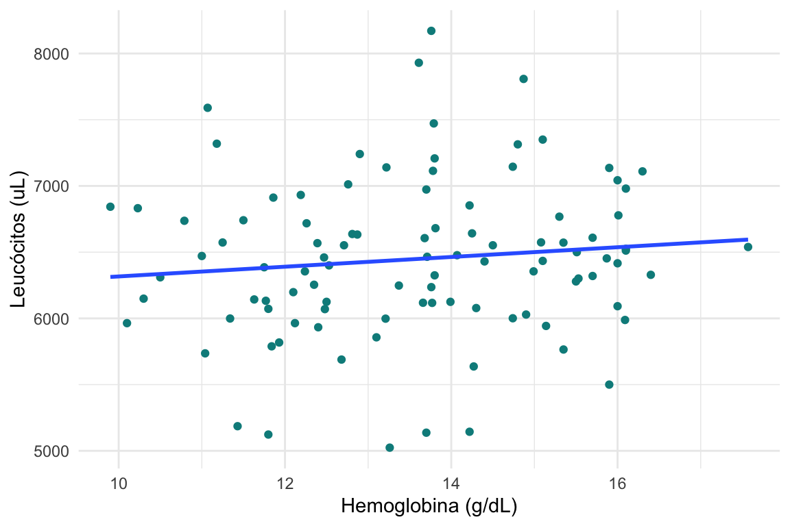
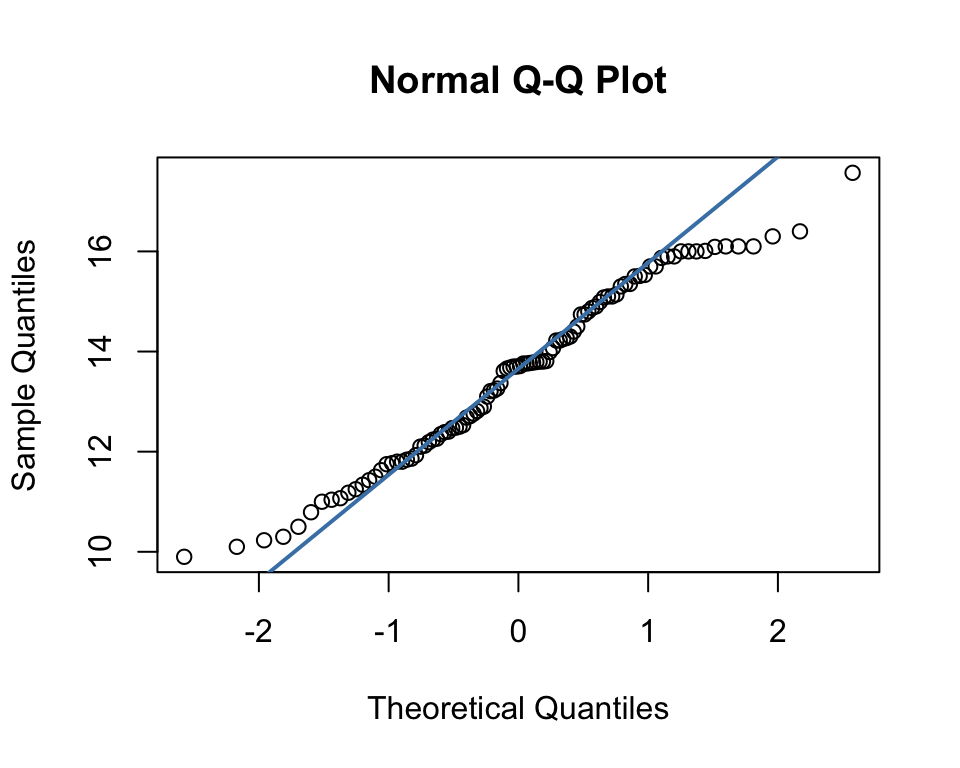
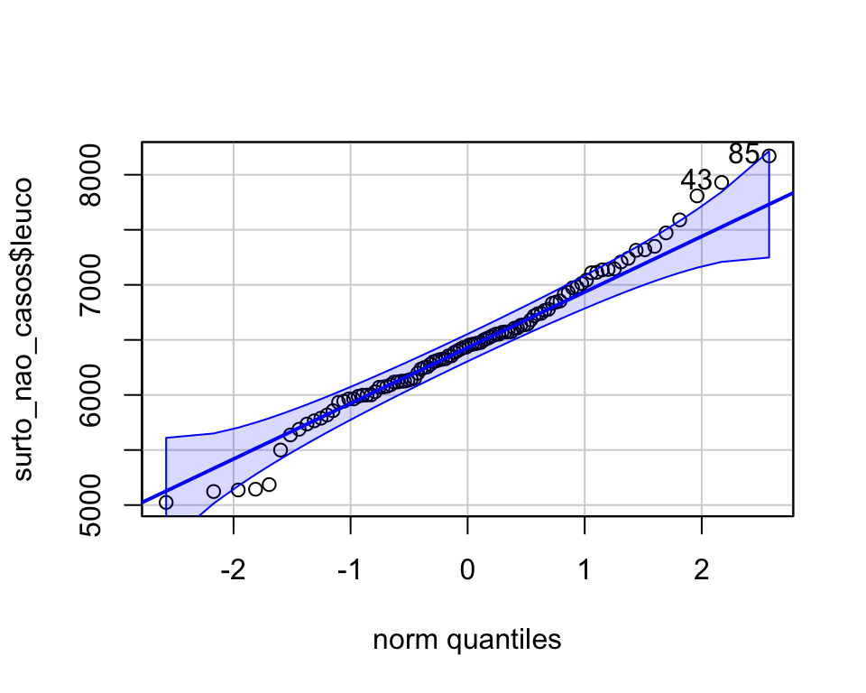
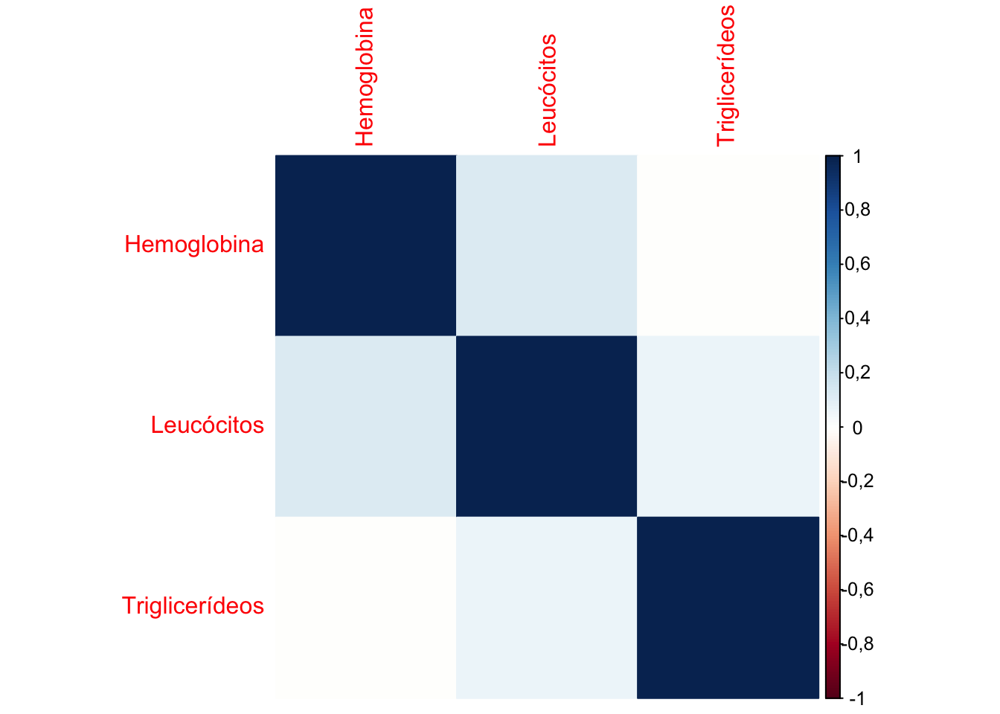

Warning: package 'Hmisc' was built under R version 4.3.3
Attaching package: 'Hmisc'
The following objects are masked from 'package:dplyr':
src, summarize
The following objects are masked from 'package:base':
format.pval, units
options(scipen =999)# para evitar números em notação científicaoptions(OutDec =",")# definir separador decimal#Leitura da banco de dados surto<-readxl::read_excel("./data/surto.xlsx", sheet ="Plan1")#Limpeza/tratamento das variáveissurto<-mutate(surto, caso =factor(caso, labels=c('Não','Sim')), sexo =factor(sexo, labels=c("Feminino","Masculino")), ocupa =factor(ocupa), diarreia =factor(diarreia, labels=c('Não','Sim')), colica =factor(colica, labels=c('Não','Sim')), vomito =factor(vomito, labels=c('Não','Sim')), nausea =factor(nausea, labels=c('Não','Sim')), cefaleia =factor(cefaleia, labels=c('Não','Sim')), desidratacao =factor(desidratacao, labels=c('Não','Sim')), febre =factor(febre, labels=c('Não','Sim')), servsaude =factor(servsaude, labels=c('Não','Sim')), gravidade =factor(gravidade,order =TRUE, labels=c('Leve','Moderado',"Grave")), salada =factor(salada, labels=c('Não','Sim')), pao =factor(pao, labels=c('Não','Sim')), medalhao =factor(medalhao, labels=c('Não','Sim')), macarrao =factor(macarrao, labels=c('Não','Sim')), molhoqueijo =factor(molhoqueijo, labels=c('Não','Sim')), molhoverm =factor(molhoverm, labels=c('Não','Sim')), pudim =factor(pudim, labels=c('Não','Sim')), frutas =factor(frutas, labels=c('Não','Sim')), agua =factor(agua, labels=c('Não','Sim')), suco =factor(suco, labels=c('Não','Sim')))#corrigindo valor digitado errado no banco de dadossurto$leuco[123]<-6980#criando variável idadesurto<-surto%>%mutate(dtnasc =as_date(dtnasc), idade =2018-year(dtnasc))
Para cada situação a ser analisada, existe um teste estatístico apropriado. Quando o objetivo é verificar a correlação entre duas variáveis quantitativas (numéricas), os coeficientes de correlação mais comumente utilizados são:
Coeficiente de Correlação de Pearson e
Coeficiente de Correlação de Spearman.
7.0.2 Coeficiente de Correlação de Pearson
O coeficiente de correlação de Pearson (\(r\)) mede o grau da correlação linear entre duas variáveis quantitativas (preferencialmente contínuas). As variáveis envolvidas devem ter distribuição normal.
O coeficiente de correlação é um índice com valores situados entre -1 e 1 que reflete a intensidade de uma relação linear entre duas variáveis.
\(r = 1\), indica correlação linear perfeita positiva entre as duas variáveis.
\(r = -1\), indica correlação linear negativa perfeita entre as duas variáveis, ou seja, quando os valores de uma variável aumenta, os valores da outra, diminui.
\(r = 0\), indica que não há correlação linear entre as duas variáveis. No entanto, pode existir outro tipo de dependência entre as variáveis que seja “não linear”. Assim, o resultado \(r=0\) deve ser investigado por outros meios.
Vale ressaltar que correlação NÃO indica causalidade!
Analisar apenas o gráfico de dispersão e o valor do coeficiente de correlação pode ser subjetivo. Então, devemos aplicar o teste de hipóteses para verificar se o coeficiente de correlação linear obtido (\(r\)) é estatisticamente diferente de zero. As hipóteses do teste de correlação são:
\(H_0\): \(r=0\)
\(H_1\): \(r\neq0\)
Considere agora que nosso interesse seja verificar se as variáveis número de hemoglobinas (hb) e número de leucócitos (leuco) são correlacionadas linearmente entre os não doentes. Primeiramente podemos construir um gráfico de dispersão para visualizar se há evidências de correlação linear entre as variáveis de interesse.
Code
#base de não doentessurto_nao_casos<-surto%>%filter(caso=="Não")surto_nao_casos%>%ggplot()+geom_point(aes(x=hb, y=leuco), #mapeamento col="cyan4")+#cor azul diferentegeom_smooth(aes(x =hb, y =leuco), #reta de tendência aos pontos se =FALSE, #não plotar intervalo de confiança method ="lm")+#modelo linearlabs(x="Hemoglobina (g/dL)", y="Leucócitos (uL)")+theme_minimal()
`geom_smooth()` using formula = 'y ~ x'

Observando o gráfico de dispersão parece não haver relação linear entre valores de hemoglobina e número de leucócitos. Entretanto, para verificar se tal correlação existe ou não e fazer inferências para a população, devemos realizar o teste de hipóteses de correlação.
Como o coeficiente de correlação de Pearson pressupõe normalidade das variáveis, devemos inicialmente, realizar o teste de normalidade dos dados.
7.0.2.1 Teste de Normalidade
Para visualizar a distribuição dos dados, podemos inicialmente realizar uma análise exploratória dos mesmos, por meio de gráficos como boxplot e histograma.
Observando os gráficos, aparentemente ambas as variáveis de interesse apresentam comportamento similar ao de uma distribuição Normal, entretanto, essa avaliação é subjetiva.
A normalidade dos dados também pode ser visualizada por meio do gráfico quantil-quantil ou qq-plot, porposto por Wilk & Gnanadesikan (1968). O qq-plot é um gráfico do quantil amostral versus quantil esperado sob normalidade (podem ser usados para validar outras distribuições diferentes da normal). Quando a configuração de pontos no gráfico se aproxima de uma reta, a suposição de normalidade é sustentável. A normalidade é suspeita se houver pontos que se desviam do comportamento linear.
No R as funções qqnorm e qqPlot (do pacote car) podem ser utilizadas para construir um qq-plot.
Code
#qqplot para a variável hemoglobina#usando comando qqnormqqnorm(surto_nao_casos$hb)qqline(surto_nao_casos$hb, col ="steelblue", lwd =2)

Code
#qqplot para a variável leucocitos#usando comando qqPlot do pacote carcar::qqPlot(surto_nao_casos$leuco)

[1] 85 43
Observa-se também que ambas as variáveis parecem seguir distribuição Normal. O qq-plot pode ser considerado um gráfico exploratório, porém recomendado quando se tem amostras muito grandes.
Existem inúmeros testes de normalidade, como o teste de kolmogorov Smirnov (KS), Shapiro Wilk, Shapiro-Francia, Anderson-Darling, Lilliefors, entre outros. Para saber quando utilizar cada um dos testes clique aqui.
Os testes de normalidade consideram as hipóteses:
\(H_0\): Os dados seguem distribuição normal
\(H_1\): Os dados não seguem distribuição normal
Observem que aqui nosso interesse é não rejeitar a hipótese nula.
No R a função shapiro.test realiza o teste de Shapiro Wilk.
Code
#Teste de normalidade para as variáveis de interesseshapiro.test(surto_nao_casos$hb)
Shapiro-Wilk normality test
data: surto_nao_casos$hb
W = 0,97528, p-value = 0,05672
Shapiro-Wilk normality test
data: surto_nao_casos$leuco
W = 0,98393, p-value = 0,2654
Observem que, ao nível de significância de 5%, não rejeitamos a hipótese de normalidade de ambas as variáveis. Dessa forma, podemos prosseguir com o teste de correlação de Pearson.
7.0.2.2 Teste de Correlação de Pearson
Code
# aplicando o teste de Pearson# defalt é Pearson, alpha 5% e teste bilateralteste_cor<-cor.test(surto_nao_casos$leuco,surto_nao_casos$hb)teste_cor
Pearson's product-moment correlation
data: surto_nao_casos$leuco and surto_nao_casos$hb
t = 1,0879, df = 98, p-value = 0,2793
alternative hypothesis: true correlation is not equal to 0
95 percent confidence interval:
-0,08909154 0,29923577
sample estimates:
cor
0,1092382
A função cor.test nos fornece o valor do coeficiente de correlação (r = 0,11), o intervalo de 95% de confiança [ -0,09 ; 0,3 ] e o p-valor do teste de hipóteses (0,279). Como p-valor > 5%, não rejeitamos a hipótese nula, ou seja, as variáveis de interesse não são estatisticamente correlacionadas ao nível de significância de 5%.
Caso as suposições do Coeficiente de Correlação de Pearson não fossem satisfeitas, poderíamos utilizar o Coeficiente de Correlação de Spearman.
7.0.3 Coeficiente de Correlação de Spearman
O coeficiente de correlação de Spearman (ρ) é utilizado quando não existe normalidade nos dados ou quando pelo menos umas das variáveis está na escala ordinal. Por não exigir nenhuma distribuição específica dos dados, é considerado um método não paramétrico. Este método utiliza apenas os postos de cada observação, e não faz quaisquer suposições.
Nota: O posto de uma observação é a sua posição relativa às demais observações, quando os dados estão em ordem crescente.
O coeficiente de correlação de Spearman mede o grau de correspondência entre as classificações (postos), em vez de entre os valores reais das variáveis. Este coeficiente avalia relações monótonas, sejam elas lineares ou não.
ρ = 1, indica correlação perfeita positiva entre as duas variáveis.
ρ = -1, indica correlação negativa perfeita entre as duas variáveis.
ρ = 0, indica que não há correlação entre as duas variáveis.
Analisar apenas o gráfico de dispersão e o valor do coeficiente de correlação pode ser subjetivo. Então, devemos aplicar o teste de hipóteses para verificar se o coeficiente de correlação obtido (ρ) é estatisticamente diferente de zero. As hipóteses do teste de correlação são:
Warning in cor.test.default(surto_nao_casos$leuco, surto_nao_casos$hb, method =
"spearman"): Cannot compute exact p-value with ties
Code
teste_spearman
Spearman's rank correlation rho
data: surto_nao_casos$leuco and surto_nao_casos$hb
S = 145798, p-value = 0,2148
alternative hypothesis: true rho is not equal to 0
sample estimates:
rho
0,1251264
A função cor.test nos fornece o valor do coeficiente de correlação (ρ = 0,13) e p-valor do teste de hipóteses de 0,215. Como p-valor > 5%, não rejeitamos a hipótese nula, ou seja, as variáveis de interesse não são estatisticamente correlacionadas ao nível de significância de 5%.
7.0.4 Matriz de Correlação
Considere agora que nosso interesse seja verificar a correlação duas a duas entre as variáveis valores de hemoglobina (hb), valores de triglicériedes (tgl) e valores de leucócitos (leuco) dos participantes que adoeceram. Podemos apresentar os resultados em uma matriz de correlação. A matriz de correlação é uma ferramenta utilizada para examinar as relações entre várias variáveis simultaneamente. Seu resultado é, essencialmente, uma tabela que apresenta o coeficiente de correlação e/ou o valor de p para cada par de variáveis analisadas. Para isso, utilizaremos os pacotes Hmisc e ggcorrplot.
Code
#Simplificando a base de dadossurto_nao_casos_cor<-surto_nao_casos%>%select(hb, leuco, tgl)#Verificando normalidade das variáveisteste_norm_hb<-shapiro.test(surto_nao_casos$hb)teste_norm_leuco<-shapiro.test(surto_nao_casos$leuco)teste_norm_tgl<-shapiro.test(surto_nao_casos$tgl)resultados_norm<-data.frame( Variável =c("Hemoglobina", "Leucócitos", "Triglicéridies"), P_Valor =c(round(teste_norm_hb$p.value,3),round(teste_norm_leuco$p.value,3),round(teste_norm_tgl$p.value,3)))resultados_norm%>%kable(col.names =c("Variável", "P-Valor"), caption ="Teste de normalidade para as variáveis em questão")
Teste de normalidade para as variáveis em questão
Variável
P-Valor
Hemoglobina
0,057
Leucócitos
0,265
Triglicéridies
0,000
7.0.4.1 Tabela de Correlação
Code
#Calculando o coeficiente de correlação de Spearmanrmat<-rcorr(as.matrix(surto_nao_casos_cor), type =c("spearman"))# Extraindo a matriz de correlaçãomatriz_correlacao<-rmat$rmatriz_correlacao%>%{colnames(.)<-c("Hemoglobina", "Leucócitos", "Triglicerídeos"); .}%>%{rownames(.)<-c("Hemoglobina", "Leucócitos", "Triglicerídeos"); .}%>%kable(caption="Tabela de Coeficiente de Correlação de Spearman (ρ)")
Tabela de Coeficiente de Correlação de Spearman (ρ)
Hemoglobina
Leucócitos
Triglicerídeos
Hemoglobina
1,0000000
0,1251264
-0,0039821
Leucócitos
0,1251264
1,0000000
0,0609079
Triglicerídeos
-0,0039821
0,0609079
1,0000000
Code
# Extraindo a matriz de p-valoresmatriz_p<-rmat$Pmatriz_p%>%{colnames(.)<-c("Hemoglobina", "Leucócitos", "Triglicerídeos"); .}%>%{rownames(.)<-c("Hemoglobina", "Leucócitos", "Triglicerídeos"); .}%>%kable(caption="Tabela de p-valor")
corrplot(matriz_correlacao, method ='color', order ='alphabet')

Code
corrplot(matriz_correlacao, method ='color', type ="upper", # Exibe apenas a metade superior diag =FALSE, # Remove a diagonal addCoef.col ="black", # Adiciona coeficientes no gráfico tl.col ="blue", # Cor dos rótulos tl.srt =0, # Rotação dos rótulos p.mat =matriz_p, sig.level =0.05)
Warning in corrplot(matriz_correlacao, method = "color", type = "upper", :
p.mat and corr may be not paired, their rownames and colnames are not totally
same!
#Calculando a matriz de p-valores usando a função cor_pmatp.mat<-cor_pmat(surto_nao_casos_cor, method ="spearman", alternative ="two.sided", conf.level =0.95)
Warning in cor.test.default(mat[, i], mat[, j], ...): Cannot compute exact
p-value with ties
Warning in cor.test.default(mat[, i], mat[, j], ...): Cannot compute exact
p-value with ties
Warning in cor.test.default(mat[, i], mat[, j], ...): Cannot compute exact
p-value with ties
Code
p.mat%>%{colnames(.)<-c("Hemoglobina", "Leucócitos", "Triglicerídeos"); .}%>%{rownames(.)<-c("Hemoglobina", "Leucócitos", "Triglicerídeos"); .}%>%kable(caption="Tabela de p-valor")
Tabela de p-valor
Hemoglobina
Leucócitos
Triglicerídeos
Hemoglobina
0,0000000
0,2148223
0,9686351
Leucócitos
0,2148223
0,0000000
0,5471867
Triglicerídeos
0,9686351
0,5471867
0,0000000
Code
# Alterando os nomes na matriz de p-valores colnames(p.mat)<-c("Hemoglobina", "Leucócitos", "Triglicerídeos")rownames(p.mat)<-c("Hemoglobina", "Leucócitos", "Triglicerídeos")ggcorrplot(matriz_correlacao, lab =TRUE, # plota os números lab_size =3, # regula o tamanho do número title ="Matriz de correlação de Spearman", digits =2, #casas depois da vírgula p.mat =p.mat)
2 - Massad, E; de Menezes, RX; Silveira, PSP; Ortega, NRS (2014). Métodos Quantitativos em Medicina. 1ª edição, Manole.
3 - Bussab W. O., Morettin P. A. (2017) - Estatística Básica - 9 Edição, Saraiva Uni.
4 - Gibbons J.D., Chakraborti S. (2011) Nonparametric Statistical Inference. In: Lovric M. (eds) International Encyclopedia of Statistical Science. Springer, Berlin, Heidelberg. https://doi.org/10.1007/978-3-642-04898-2_420
5 - Miot, Hélio Amante. (2017). Avaliação da normalidade dos dados em estudos clínicos e experimentais. Jornal Vascular Brasileiro, 16(2), 88-91. https://dx.doi.org/10.1590/1677-5449.041117
# Teste de Hipóteses no R - CorrelaçãoPara exemplificação, considere o problema do [surto de intoxicação alimentar estafilocócica](https://drive.google.com/file/d/1LGrkgWRWopdpOyuObL--2rbLOc05Cyc1/view?usp=share_link), banco de dados [surto](https://docs.google.com/spreadsheets/d/1Xelz4_hMWR6wwfYBsMtIgvcbU5qk0_VJ/edit?usp=sharing&ouid=107277038879352988537&rtpof=true&sd=true).### Leitura e manipulação da base de dados```{r }#| fold: false#Carregamento dos pacotes necessárioslibrary(tidyverse) # tratamento do banco library(stats) # para aplicar os testeslibrary(knitr) # para formatar as tabelaslibrary(Hmisc) # para criar matriz de correlaçãolibrary(ggcorrplot) #para criar gráficos da matriz de correlaçãolibrary(corrplot) #para criar gráficos da matriz de correlaçãooptions(scipen = 999) # para evitar números em notação científicaoptions(OutDec = ",") # definir separador decimal#Leitura da banco de dados surto <- readxl::read_excel("./data/surto.xlsx", sheet = "Plan1") #Limpeza/tratamento das variáveissurto <- mutate(surto, caso = factor(caso, labels=c('Não','Sim')), sexo = factor(sexo, labels=c("Feminino","Masculino")), ocupa = factor(ocupa), diarreia = factor(diarreia, labels=c('Não','Sim')), colica = factor(colica, labels=c('Não','Sim')), vomito = factor(vomito, labels=c('Não','Sim')), nausea = factor(nausea, labels=c('Não','Sim')), cefaleia = factor(cefaleia, labels=c('Não','Sim')), desidratacao = factor(desidratacao, labels=c('Não','Sim')), febre = factor(febre, labels=c('Não','Sim')), servsaude = factor(servsaude, labels=c('Não','Sim')), gravidade = factor(gravidade,order = TRUE, labels=c('Leve','Moderado',"Grave")), salada = factor(salada, labels=c('Não','Sim')), pao = factor(pao, labels=c('Não','Sim')), medalhao = factor(medalhao, labels=c('Não','Sim')), macarrao = factor(macarrao, labels=c('Não','Sim')), molhoqueijo = factor(molhoqueijo, labels=c('Não','Sim')), molhoverm = factor(molhoverm, labels=c('Não','Sim')), pudim = factor(pudim, labels=c('Não','Sim')), frutas = factor(frutas, labels=c('Não','Sim')), agua = factor(agua, labels=c('Não','Sim')), suco = factor(suco, labels=c('Não','Sim')))#corrigindo valor digitado errado no banco de dadossurto$leuco[123] <- 6980#criando variável idadesurto <- surto %>% mutate(dtnasc = as_date(dtnasc), idade = 2018 - year(dtnasc) )```Para cada situação a ser analisada, existe um teste estatístico apropriado. Quando o objetivo é verificar a correlação entre duas variáveis quantitativas (numéricas), os coeficientes de correlação mais comumente utilizados são:- Coeficiente de Correlação de Pearson e- Coeficiente de Correlação de Spearman.### Coeficiente de Correlação de PearsonO coeficiente de correlação de Pearson ($r$) mede o grau da correlação linear entre duas variáveis quantitativas (preferencialmente contínuas). As variáveis envolvidas devem ter distribuição normal.```{r, echo = FALSE, fig.align='center', out.width="50%"}knitr::include_graphics("https://raw.githubusercontent.com/allisonhorst/stats-illustrations/master/other-stats-artwork/not_normal.png")```O coeficiente de correlação é um índice com valores situados entre -1 e 1 que reflete a intensidade de uma relação linear entre duas variáveis.- $r = 1$, indica correlação linear perfeita positiva entre as duas variáveis.- $r = -1$, indica correlação linear negativa perfeita entre as duas variáveis, ou seja, quando os valores de uma variável aumenta, os valores da outra, diminui.- $r = 0$, indica que não há correlação linear entre as duas variáveis. No entanto, pode existir outro tipo de dependência entre as variáveis que seja "não linear". Assim, o resultado $r=0$ deve ser investigado por outros meios.**Vale ressaltar que correlação NÃO indica causalidade!**Analisar apenas o gráfico de dispersão e o valor do coeficiente de correlação pode ser subjetivo. Então, devemos aplicar o teste de hipóteses para verificar se o coeficiente de correlação linear obtido ($r$) é estatisticamente diferente de zero. As hipóteses do teste de correlação são:- $H_0$: $r=0$- $H_1$: $r\neq0$Considere agora que nosso interesse seja verificar se as variáveis número de hemoglobinas (hb) e número de leucócitos (leuco) são correlacionadas linearmente entre os não doentes. Primeiramente podemos construir um gráfico de dispersão para visualizar se há evidências de correlação linear entre as variáveis de interesse.```{r,fig.align='center',fig.width = 6, fig.height=4}#base de não doentessurto_nao_casos <- surto %>% filter(caso=="Não") surto_nao_casos %>% ggplot() + geom_point(aes(x=hb, y=leuco), #mapeamento col="cyan4") + #cor azul diferente geom_smooth(aes(x = hb, y = leuco), #reta de tendência aos pontos se = FALSE, #não plotar intervalo de confiança method = "lm") + #modelo linear labs(x="Hemoglobina (g/dL)", y="Leucócitos (uL)") + theme_minimal()```Observando o gráfico de dispersão parece não haver relação linear entre valores de hemoglobina e número de leucócitos. Entretanto, para verificar se tal correlação existe ou não e fazer inferências para a população, devemos realizar o teste de hipóteses de correlação.Como o coeficiente de correlação de Pearson pressupõe normalidade das variáveis, devemos inicialmente, realizar o teste de normalidade dos dados.#### Teste de NormalidadePara visualizar a distribuição dos dados, podemos inicialmente realizar uma análise exploratória dos mesmos, por meio de gráficos como boxplot e histograma.**Boxplot**```{r,fig.align='center',fig.width = 6, fig.height=4}# distribuição das variáveis leuco e hbp1 <- surto_nao_casos %>% ggplot(aes(y=leuco))+ geom_boxplot()+ ylab("Número de leucócitos") + theme_minimal() + theme(axis.title.x = element_blank(), axis.text.x = element_blank())p2 <- surto_nao_casos %>% ggplot(aes(y=hb))+ geom_boxplot()+ ylab("Valores de hemoglobina") + theme_minimal() + theme(axis.title.x = element_blank(), axis.text.x = element_blank())# Plotando os dois graficos (em colunas)gridExtra::grid.arrange(p1 , p2 , ncol=2)```**Histograma**```{r,fig.align='center',fig.width = 6, fig.height=4}# hbp3 <- surto_nao_casos %>% ggplot(aes(x = hb)) + geom_histogram( binwidth = 1, color = "black", fill = "steelblue", aes(y = after_stat(density)) ) + geom_density( stat = "density", alpha = 0.2, fill = "blue" ) + xlab("Valores de hemoglobina")+ ylab("Densidade") + theme_classic()# leucop4 <- surto_nao_casos %>% ggplot(aes(x=leuco))+ geom_histogram(binwidth=500, color="black", fill="steelblue", aes(y = after_stat(density)) ) + geom_density(stat="density", alpha=I(0.2), fill="green") + xlab("Número de leucócitos")+ ylab("Densidade") + theme_classic()# Plotando os dois graficos (em colunas)gridExtra::grid.arrange(p3,p4 , ncol=2)```Observando os gráficos, aparentemente ambas as variáveis de interesse apresentam comportamento similar ao de uma distribuição Normal, entretanto, essa avaliação é subjetiva.A normalidade dos dados também pode ser visualizada por meio do gráfico quantil-quantil ou *qq-plot*, porposto por Wilk & Gnanadesikan (1968). O qq-plot é um gráfico do quantil amostral versus quantil esperado sob normalidade (podem ser usados para validar outras distribuições diferentes da normal). Quando a configuração de pontos no gráfico se aproxima de uma reta, a suposição de normalidade é sustentável. A normalidade é suspeita se houver pontos que se desviam do comportamento linear.No R as funções `qqnorm` e `qqPlot` (do pacote `car`) podem ser utilizadas para construir um qq-plot.```{r,fig.align='center',fig.width = 5, fig.height=4}#qqplot para a variável hemoglobina#usando comando qqnormqqnorm(surto_nao_casos$hb)qqline(surto_nao_casos$hb, col = "steelblue", lwd = 2)#qqplot para a variável leucocitos#usando comando qqPlot do pacote carcar::qqPlot(surto_nao_casos$leuco)```Observa-se também que ambas as variáveis parecem seguir distribuição Normal. O qq-plot pode ser considerado um gráfico exploratório, porém recomendado quando se tem amostras muito grandes.Existem inúmeros testes de normalidade, como o teste de kolmogorov Smirnov (KS), Shapiro Wilk, Shapiro-Francia, Anderson-Darling, Lilliefors, entre outros. Para saber quando utilizar cada um dos testes [clique aqui](https://www.scielo.br/pdf/jvb/v16n2/1677-5449-jvb-16-2-88.pdf).Os testes de normalidade consideram as hipóteses:- $H_0$: Os dados seguem distribuição normal- $H_1$: Os dados não seguem distribuição normalObservem que aqui nosso interesse é **não** rejeitar a hipótese nula.No R a função `shapiro.test` realiza o teste de Shapiro Wilk.```{r eval=FALSE, include=FALSE}#Teste de normalidade para as variáveis de interesseshapiro.test(surto_nao_casos$hb)nortest::lillie.test(surto_nao_casos$hb)nortest::ad.test(surto_nao_casos$hb)shapiro.test(surto_nao_casos$leuco)nortest::lillie.test(surto_nao_casos$leuco)nortest::ad.test(surto_nao_casos$leuco)``````{r}#Teste de normalidade para as variáveis de interesseshapiro.test(surto_nao_casos$hb)shapiro.test(surto_nao_casos$leuco)```Observem que, ao nível de significância de 5%, não rejeitamos a hipótese de normalidade de ambas as variáveis. Dessa forma, podemos prosseguir com o teste de correlação de Pearson.#### Teste de Correlação de Pearson```{r}# aplicando o teste de Pearson# defalt é Pearson, alpha 5% e teste bilateralteste_cor <-cor.test(surto_nao_casos$leuco, surto_nao_casos$hb) teste_cor```A função `cor.test` nos fornece o valor do coeficiente de correlação (r = `r round(teste_cor$estimate, 2)`), o intervalo de 95% de confiança `r paste("[",round(teste_cor$conf.int[[1]],2), ";",round(teste_cor$conf.int[[2]],2),"]" )` e o p-valor do teste de hipóteses (`r round(teste_cor$p.value,3)`). Como p-valor \> 5%, não rejeitamos a hipótese nula, ou seja, as variáveis de interesse não são estatisticamente correlacionadas ao nível de significância de 5%.Caso as suposições do Coeficiente de Correlação de Pearson não fossem satisfeitas, poderíamos utilizar o Coeficiente de Correlação de Spearman.### Coeficiente de Correlação de SpearmanO coeficiente de correlação de Spearman (ρ) é utilizado quando **não existe normalidade** nos dados ou quando **pelo menos umas das variáveis está na escala ordinal**. Por não exigir nenhuma distribuição específica dos dados, é considerado um método não paramétrico. Este método utiliza apenas os postos de cada observação, e não faz quaisquer suposições.**Nota:** O posto de uma observação é a sua posição relativa às demais observações, quando os dados estão em ordem crescente.O coeficiente de correlação de Spearman mede o grau de correspondência entre as classificações (postos), em vez de entre os valores reais das variáveis. Este coeficiente avalia relações monótonas, sejam elas lineares ou não.- ρ = 1, indica correlação perfeita positiva entre as duas variáveis.- ρ = -1, indica correlação negativa perfeita entre as duas variáveis.- ρ = 0, indica que não há correlação entre as duas variáveis.Analisar apenas o gráfico de dispersão e o valor do coeficiente de correlação pode ser subjetivo. Então, devemos aplicar o teste de hipóteses para verificar se o coeficiente de correlação obtido (ρ) é estatisticamente diferente de zero. As hipóteses do teste de correlação são:- $H_0$: ρ $=0$- $H_1$: ρ $\neq 0$```{r }#correlaçãoteste_spearman <- cor.test(surto_nao_casos$leuco, surto_nao_casos$hb, method = "spearman")teste_spearman```A função *cor.test* nos fornece o valor do coeficiente de correlação (ρ = `r round(teste_spearman$estimate, 2)`) e p-valor do teste de hipóteses de `r round(teste_spearman$p.value,3)`. Como p-valor \> 5%, não rejeitamos a hipótese nula, ou seja, as variáveis de interesse não são estatisticamente correlacionadas ao nível de significância de 5%.### Matriz de CorrelaçãoConsidere agora que nosso interesse seja verificar a correlação duas a duas entre as variáveis valores de hemoglobina (hb), valores de triglicériedes (tgl) e valores de leucócitos (leuco) dos participantes que adoeceram. Podemos apresentar os resultados em uma matriz de correlação. A matriz de correlação é uma ferramenta utilizada para examinar as relações entre várias variáveis simultaneamente. Seu resultado é, essencialmente, uma tabela que apresenta o coeficiente de correlação e/ou o valor de p para cada par de variáveis analisadas. Para isso, utilizaremos os pacotes `Hmisc` e `ggcorrplot`.```{r}#Simplificando a base de dadossurto_nao_casos_cor <- surto_nao_casos %>%select(hb, leuco, tgl)#Verificando normalidade das variáveisteste_norm_hb <-shapiro.test(surto_nao_casos$hb)teste_norm_leuco <-shapiro.test(surto_nao_casos$leuco)teste_norm_tgl <-shapiro.test(surto_nao_casos$tgl)resultados_norm <-data.frame( Variável =c("Hemoglobina", "Leucócitos", "Triglicéridies"),P_Valor =c(round(teste_norm_hb$p.value,3),round(teste_norm_leuco$p.value,3),round(teste_norm_tgl$p.value,3) ))resultados_norm %>%kable(col.names =c("Variável", "P-Valor"),caption ="Teste de normalidade para as variáveis em questão") ```#### Tabela de Correlação```{r}#Calculando o coeficiente de correlação de Spearmanrmat<-rcorr(as.matrix(surto_nao_casos_cor), type =c("spearman"))# Extraindo a matriz de correlaçãomatriz_correlacao <- rmat$rmatriz_correlacao %>% {colnames(.) <-c("Hemoglobina", "Leucócitos", "Triglicerídeos"); .} %>% {rownames(.) <-c("Hemoglobina", "Leucócitos", "Triglicerídeos"); .} %>%kable(caption="Tabela de Coeficiente de Correlação de Spearman (ρ)")# Extraindo a matriz de p-valoresmatriz_p <- rmat$P matriz_p %>% {colnames(.) <-c("Hemoglobina", "Leucócitos", "Triglicerídeos"); .} %>% {rownames(.) <-c("Hemoglobina", "Leucócitos", "Triglicerídeos"); .} %>%kable(caption="Tabela de p-valor")```#### Gráfico de Correlação usando `corrplot````{r}#Gráfico de correlaçãocorrplot(matriz_correlacao)#outras opções:colnames(matriz_correlacao) <-c("Hemoglobina", "Leucócitos", "Triglicerídeos")rownames(matriz_correlacao) <-c("Hemoglobina", "Leucócitos", "Triglicerídeos")corrplot(matriz_correlacao,method ='number')corrplot(matriz_correlacao, method ='color', order ='alphabet')corrplot(matriz_correlacao,method ='color',type ="upper", # Exibe apenas a metade superiordiag =FALSE, # Remove a diagonaladdCoef.col ="black", # Adiciona coeficientes no gráficotl.col ="blue", # Cor dos rótulostl.srt =0, # Rotação dos rótulosp.mat = matriz_p, sig.level =0.05 )```Mais informações sobre a função `corrplot` em: <https://cran.r-project.org/web/packages/corrplot/vignettes/corrplot-intro.html>#### Gráfico de Correlação usando `ggcorrplot````{r}#Calculando a matriz de p-valores usando a função cor_pmatp.mat <-cor_pmat(surto_nao_casos_cor,method ="spearman",alternative ="two.sided",conf.level =0.95)p.mat %>% {colnames(.) <-c("Hemoglobina", "Leucócitos", "Triglicerídeos"); .} %>% {rownames(.) <-c("Hemoglobina", "Leucócitos", "Triglicerídeos"); .} %>%kable(caption="Tabela de p-valor")``````{r}# Alterando os nomes na matriz de p-valores colnames(p.mat) <-c("Hemoglobina", "Leucócitos", "Triglicerídeos")rownames(p.mat) <-c("Hemoglobina", "Leucócitos", "Triglicerídeos")ggcorrplot(matriz_correlacao, lab =TRUE, # plota os númeroslab_size =3, # regula o tamanho do númerotitle ="Matriz de correlação de Spearman",digits =2, #casas depois da vírgulap.mat = p.mat ) ```Mais informações em: <https://cran.r-project.org/web/packages/ggcorrplot/readme/README.html>### Referências1 - Vieira, Sonia. Introdução à bioestatística. 4. ed. Elsevier, 2011.2 - Massad, E; de Menezes, RX; Silveira, PSP; Ortega, NRS (2014). Métodos Quantitativos em Medicina. 1ª edição, Manole.3 - Bussab W. O., Morettin P. A. (2017) - Estatística Básica - 9 Edição, Saraiva Uni.4 - Gibbons J.D., Chakraborti S. (2011) Nonparametric Statistical Inference. In: Lovric M. (eds) International Encyclopedia of Statistical Science. Springer, Berlin, Heidelberg. <https://doi.org/10.1007/978-3-642-04898-2_420>5 - Miot, Hélio Amante. (2017). Avaliação da normalidade dos dados em estudos clínicos e experimentais. Jornal Vascular Brasileiro, 16(2), 88-91. <https://dx.doi.org/10.1590/1677-5449.041117>6 - <https://github.com/allisonhorst/stats-illustrations>